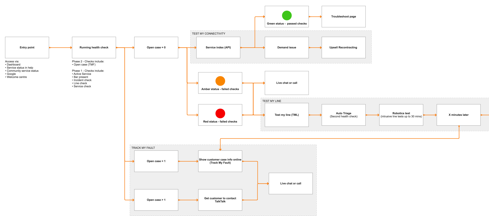
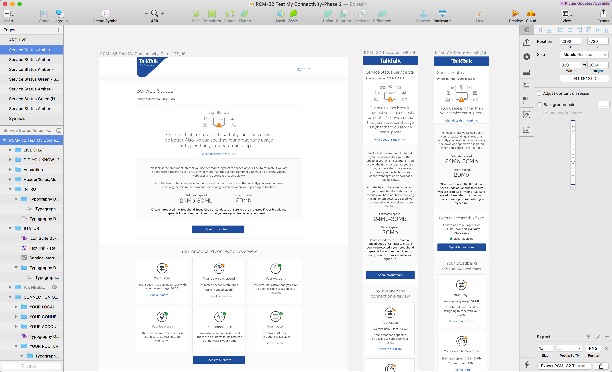

TalkTalk Selected projects
UX / UI / Front-end
Service Status and Self Repair
This service allows users to check their internet line and see the status, it also provides tools for 'self-repair'. This very complex, multi journey project is backed by real customer and focus groups data. This was a huge milestone in our ability to support Customers using data to drive the diagnostics.

The early stages of the project required mapping out all the possible scenarios and journeys our customers face when running diagnostics.


